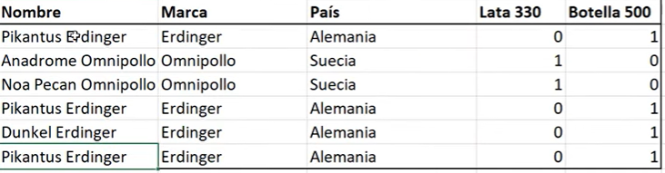
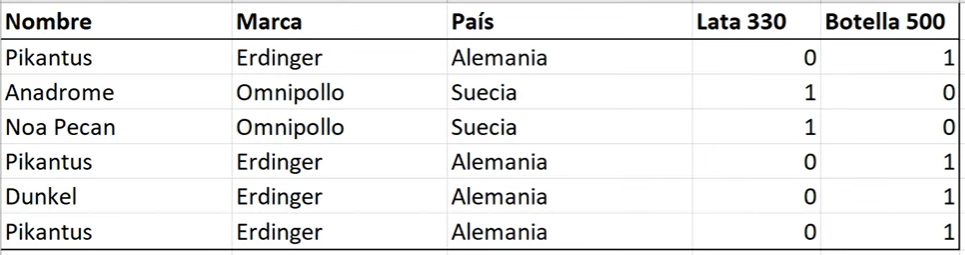
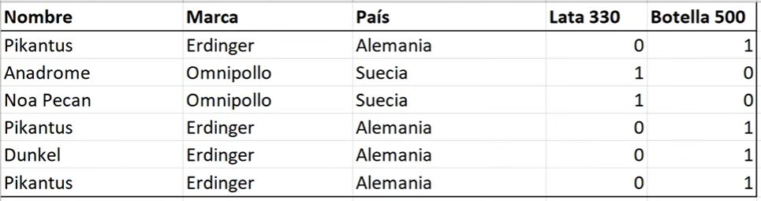
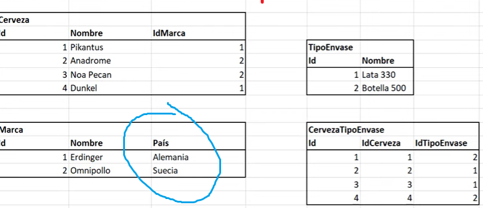

app.sqldbm es una herramienta online que permite diseñar BBDD.
La normalizacion es un proceso donde se aplican reglas, conocidas como formas, a una base de datos relacional con el objetivo de evitar la redundancia de datos. Hay 5 formas, sin embargo es raro llegar a la 4ta y 5ta forma.
La primera forma cuenta con 3 reglas.
La informacion debe alamacenarse de forma que sea indivisible:
 

Las tablas deben tener un campo unico e irrepetible que identifique cada registro y sirva para hacer busquedas.
Las columnas distintas que contienen variaciones del mismo tipo de informacion deben ser movidas a otra tabla:
Cuanta con una regla.
Todos los registros repetidos en las tablas deben pasar a depender de una Clave Primaria:
Cuenta con X reglas.
Todos los registros independidentes deben pasar a depender de una Clave Primaria en las tablas:
 Para continuar la investigacion usa los videos: enlace. Y actualiza el temario:
/* ---- Normalizacion (Basico)
Herramienta de disenio
Introduccion
Primera forma normal
/* ---- Dependencias
Dependencias funcionales
Dependencias funcionales triviales
Dependencias transitivas
Dependencias parciales
Cardinalidad
/* ---- Normalizacion (Intermedio)
Segunda forma normal
Tercera forma normal
Forma normal Boyce Codd
/* ---- Normalizacion (Avanzado)
Cuarta forma normal
Quinta forma normal